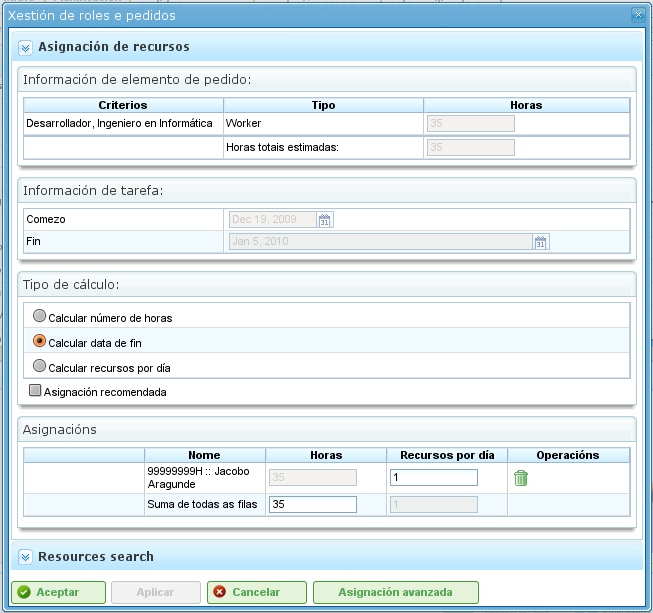

Ressurstildeling
Contents
Ressurstildeling er en av programmets viktigste funksjoner og kan utføres på to forskjellige måter:
- Spesifikk tildeling
- Generisk tildeling
Begge typer tildeling forklares i de følgende avsnittene.
For å utføre en av typene ressurstildeling kreves følgende trinn:
- Gå til planvisningen for et prosjekt.
- Høyreklikk på oppgaven som skal planlegges.

Meny for ressurstildeling
- Programmet viser en skjerm med følgende informasjon:
- Liste over kriterier som skal oppfylles: For hver timegruppe vises en liste over nødvendige kriterier.
- Oppgaveinformasjon: Start- og sluttdato for oppgaven.
- Type beregning: Systemet lar brukere velge strategi for beregning av tildelinger:
- Beregn antall timer: Beregner antall timer som kreves fra de tildelte ressursene, gitt en sluttdato og et antall ressurser per dag.
- Beregn sluttdato: Beregner sluttdatoen for oppgaven basert på antall ressurser tildelt oppgaven og det totale antallet timer som kreves for å fullføre den.
- Beregn antall ressurser: Beregner antall ressurser som kreves for å fullføre oppgaven innen en bestemt dato, gitt et kjent antall timer per ressurs.
- Anbefalt tildeling: Dette alternativet lar programmet samle kriteriene som skal oppfylles og det totale antallet timer fra alle timegrupper, og deretter anbefale en generisk tildeling. Hvis det finnes en tidligere tildeling, sletter systemet den og erstatter den med den nye.
- Tildelinger: En liste over tildelinger som er gjort. Denne listen viser de generiske tildelingene (nummeret vil være listen over oppfylte kriterier, antall timer og ressurser per dag). Hver tildeling kan eksplisitt fjernes ved å klikke sletteknappen.

Ressurstildeling
- Brukere velger "Søk etter ressurser."
- Programmet viser en ny skjerm bestående av et kriterietre og en liste over arbeidere som oppfyller de valgte kriteriene til høyre:

Søk etter ressurstildeling
- Brukere kan velge:
- Spesifikk tildeling: Se avsnittet "Spesifikk tildeling" for detaljer om dette alternativet.
- Generisk tildeling: Se avsnittet "Generisk tildeling" for detaljer om dette alternativet.
- Brukere velger en liste over kriterier (generisk) eller en liste over arbeidere (spesifikk). Det kan gjøres flere valg ved å holde inne "Ctrl"-tasten mens man klikker på hver arbeider/hvert kriterium.
- Brukere klikker deretter på "Velg"-knappen. Det er viktig å huske at hvis en generisk tildeling ikke er valgt, må brukerne velge en arbeider eller maskin for å utføre tildelingen. Hvis en generisk tildeling er valgt, er det tilstrekkelig for brukerne å velge ett eller flere kriterier.
- Programmet viser deretter de valgte kriteriene eller ressurslisten i listen over tildelinger på den opprinnelige skjermen for ressurstildeling.
- Brukerne må velge timer eller ressurser per dag, avhengig av tildelingsmetoden som brukes i programmet.
Spesifikk tildeling
Dette er den spesifikke tildelingen av en ressurs til en prosjektoppgave. Med andre ord bestemmer brukeren hvilken spesifikk arbeider (etter navn og etternavn) eller maskin som må tildeles til en oppgave.
Spesifikk tildeling kan utføres på skjermen vist i dette bildet:

Spesifikk ressurstildeling
Når en ressurs er spesifikt tildelt, oppretter programmet daglige tildelinger basert på prosentandelen av daglig tildelte ressurser valgt, etter å ha sammenlignet den med den tilgjengelige ressurskalenderen. For eksempel betyr en tildeling på 0,5 ressurser for en 32-timers oppgave at 4 timer per dag tildeles den spesifikke ressursen for å fullføre oppgaven (forutsatt en arbeidskalender på 8 timer per dag).
Spesifikk maskintildeling
Spesifikk maskintildeling fungerer på samme måte som arbeidertildeling. Når en maskin tilordnes til en oppgave, lagrer systemet en spesifikk tildeling av timer for den valgte maskinen. Den viktigste forskjellen er at systemet søker i listen over tildelte arbeidere eller kriterier i det øyeblikket maskinen tildeles:
- Hvis maskinen har en liste over tildelte arbeidere, velger programmet blant de som kreves av maskinen, basert på den tildelte kalenderen. For eksempel, hvis maskinkalenderen er 16 timer per dag og ressurskalenderen er 8 timer, tildeles to ressurser fra listen over tilgjengelige ressurser.
- Hvis maskinen har ett eller flere tildelte kriterier, gjøres generiske tildelinger blant ressursene som oppfyller kriteriene som er tildelt maskinen.
Generisk tildeling
Generisk tildeling skjer når brukere ikke velger ressurser spesifikt, men overlater beslutningen til programmet, som fordeler belastningene blant selskapets tilgjengelige ressurser.

Generisk ressurstildeling
Tildelingssystemet bruker følgende forutsetninger som grunnlag:
- Oppgaver har kriterier som kreves av ressurser.
- Ressurser er konfigurert til å oppfylle kriterier.
Systemet feiler imidlertid ikke når kriterier ikke er tildelt, men når alle ressurser oppfyller ikke-kravet til kriterier.
Den generiske tildelingsalgoritmen fungerer som følger:
- Alle ressurser og dager behandles som beholdere der daglige tildelinger av timer passer, basert på maksimal tildelingskapasitet i oppgavekalenderen.
- Systemet søker etter ressursene som oppfyller kriteriet.
- Systemet analyserer hvilke tildelinger som for øyeblikket har forskjellige ressurser som oppfyller kriterier.
- Ressursene som oppfyller kriteriene velges blant de som har tilstrekkelig tilgjengelighet.
- Hvis friere ressurser ikke er tilgjengelige, gjøres tildelinger til ressursene som har mindre tilgjengelighet.
- Overtildeling av ressurser begynner bare når alle ressursene som oppfyller de respektive kriteriene er 100% tildelt, inntil det totale beløpet som kreves for å utføre oppgaven er nådd.
Generisk maskintildeling
Generisk maskintildeling fungerer på samme måte som arbeidertildeling. For eksempel, når en maskin tilordnes til en oppgave, lagrer systemet en generisk tildeling av timer for alle maskiner som oppfyller kriteriene, som beskrevet for ressurser generelt. I tillegg utfører systemet følgende prosedyre for maskiner:
- For alle maskiner valgt for generisk tildeling:
- Den samler maskinens konfigurasjonsinformasjon: alfaverdi, tildelte arbeidere og kriterier.
- Hvis maskinen har en tildelt liste over arbeidere, velger programmet det antallet som kreves av maskinen, avhengig av den tildelte kalenderen. For eksempel, hvis maskinkalenderen er 16 timer per dag og ressurskalenderen er 8 timer, tildeler programmet to ressurser fra listen over tilgjengelige ressurser.
- Hvis maskinen har ett eller flere tildelte kriterier, gjør programmet generiske tildelinger blant ressursene som oppfyller kriteriene som er tildelt maskinen.
Avansert tildeling
Avanserte tildelinger lar brukere utforme tildelinger som automatisk utføres av applikasjonen for å tilpasse dem. Denne prosedyren lar brukere manuelt velge de daglige timene som dedikeres av ressurser til tildelte oppgaver eller definere en funksjon som brukes på tildelingen.
Trinnene for å håndtere avanserte tildelinger er:
- Gå til vinduet for avansert tildeling. Det er to måter å få tilgang til avanserte tildelinger på:
- Gå til et spesifikt prosjekt og endre visningen til avansert tildeling. I dette tilfellet vil alle oppgavene i prosjektet og tildelte ressurser (spesifikke og generiske) vises.
- Gå til vinduet for ressurstildeling ved å klikke på "Avansert tildeling"-knappen. I dette tilfellet vil tildelingene som viser ressursene (generiske og spesifikke) tildelt til en oppgave vises.

Avansert ressurstildeling
- Brukere kan velge ønsket zoomnivå:
- Zoomnivåer større enn én dag: Hvis brukere endrer den tildelte timeverdien til en uke, måned, fire-måneds- eller seks-månedersperiode, distribuerer systemet timene lineært over alle dager i hele den valgte perioden.
- Daglig zoom: Hvis brukere endrer den tildelte timeverdien til en dag, gjelder disse timene bare den dagen. Følgelig kan brukere bestemme hvor mange timer de vil tildele per dag til oppgaveressurser.
- Brukere kan velge å utforme en avansert tildelingsfunksjon. For å gjøre dette må brukerne:
- Velge funksjonen fra utvalglisten som vises ved siden av hver ressurs og klikke på "Konfigurer".
- Systemet viser et nytt vindu hvis den valgte funksjonen trenger spesifikk konfigurasjon. Støttede funksjoner:
- Segmenter: En funksjon som lar brukere definere segmenter der en polynomfunksjon brukes. Funksjonen per segment konfigureres som følger:
- Dato: Datoen segmentet avsluttes. Hvis den følgende verdien (lengde) er fastsatt, beregnes datoen; alternativt beregnes lengden.
- Definere lengden på hvert segment: Angir hvilken prosentandel av oppgavens varighet som kreves for segmentet.
- Definere mengden arbeid: Angir hvilken arbeidsmengdeprosentandel som forventes å bli fullført i dette segmentet. Mengden arbeid må være inkrementell. For eksempel, hvis det er et 10%-segment, må det neste være større (for eksempel 20%).
- Segmentgrafer og akkumulerte belastninger.
- Segmenter: En funksjon som lar brukere definere segmenter der en polynomfunksjon brukes. Funksjonen per segment konfigureres som følger:
- Brukere klikker deretter på "Godta."
- Programmet lagrer funksjonen og bruker den på de daglige ressurstildelingene.

Konfigurasjon av segmentfunksjonen